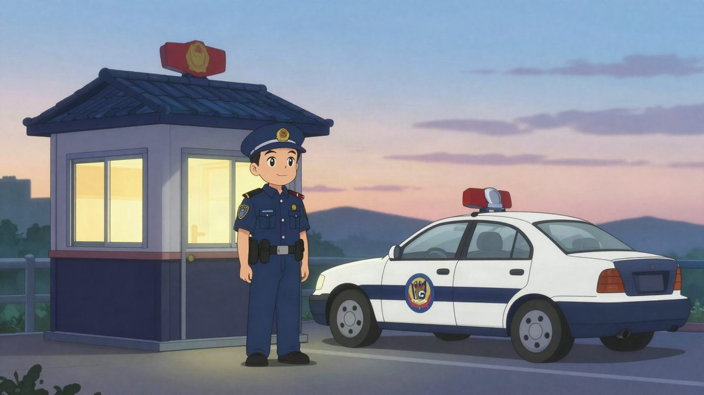

Sukenosuke Hongo: bivši japanski policajac postao VTuber s milijun pregleda

Sukenosuke Hongo, novi japanski VTuber koji tvrdi da je bivši policajac, za dva tjedna skupio je više od milijun pregleda i 28.000 pratitelja. U videima najavljuje savjete o zakonima, prevenciji kriminala i ponašanju nakon prometnih nesreća, uz razgovore s gledateljima i gaming streamove.
Početkom studenoga na japanskom YouTubeu debitirao je Sukenosuke Hongo, VTuber neobičnog koncepta. U uvodnom videu tvrdi da je bivši policajac koji je nakon odlaska iz policije odlučio postati VTuber. Kanal je za dva tjedna skupio više od milijun pregleda i 28.000 pretplatnika, a pojavili su se i fanartovi te brojni zahtjevi za sadržajem.
Zašto je otišao iz policije, ne kaže. Tvrdi da je radio u lokalnim policijskim postajama (koban), vozio patrolna vozila i ima iskustva u interventnoj policiji.
Sadržaj kanala
Čini se da će kanal biti usko povezan s njegovom prijašnjom profesijom. Gledatelji bi trebali dobiti savjete o zakonima i zaštiti, prevenciji kriminala te koracima nakon prometnih nesreća i sličnih situacija.
Hongo je već objavio nekoliko videa o prevenciji kriminala. U jednom upozorava žrtve krađe donjeg rublja da problem ne ignoriraju i objašnjava što mogu učiniti da se zaštite.
Kanal ipak neće biti isključivo edukativan. Uz razgovore s gledateljima, osobne anegdote i zajedničko gledanje sadržaja (watch-along streamovi), Hongo planira i gaming streamove. Fanovi mu već predlažu igre koje odgovaraju policajcu, među njima Teach My Little Sister How To Drive.
Kanal je na japanskom, a sadržaj se odnosi na japanske zakone i policijsku praksu.
Izvor: Automaton
Povezani članci
 Čovjek iz Chengdua s 4.000 juana (oko 500 eura) napravio je AI seriju od 96 epizoda i skupio 600 milijuna pregleda13. studenoga 2026.
Čovjek iz Chengdua s 4.000 juana (oko 500 eura) napravio je AI seriju od 96 epizoda i skupio 600 milijuna pregleda13. studenoga 2026. Flipper One je na Kickstarteru skupio 2 milijuna dolara u pola sata17. studenoga 2026.
Flipper One je na Kickstarteru skupio 2 milijuna dolara u pola sata17. studenoga 2026.- Novi Wenjie M8 stiže od oko 49.300 eura, za dva sata skupio 4.600 narudžbi14. studenoga 2026.